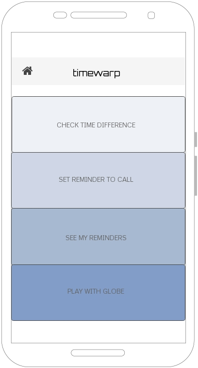
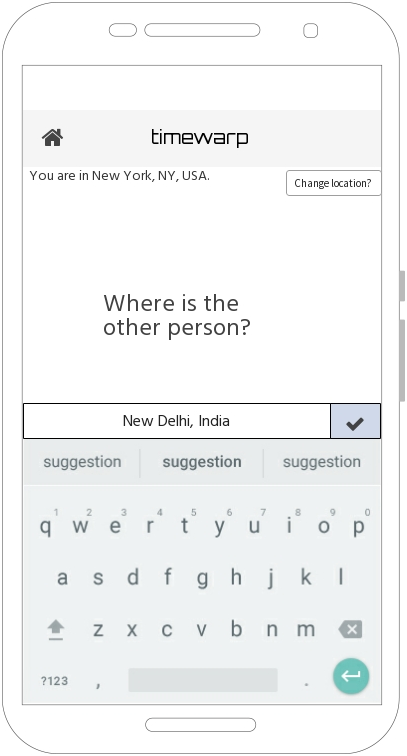
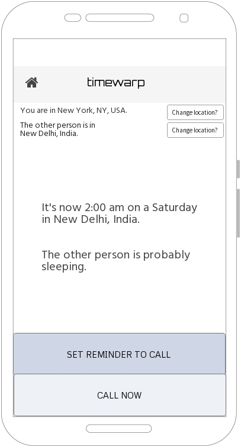
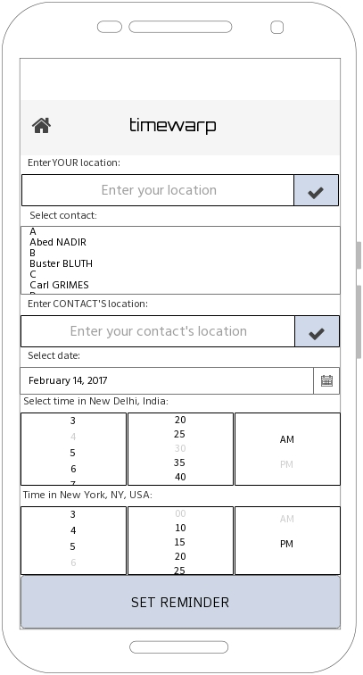
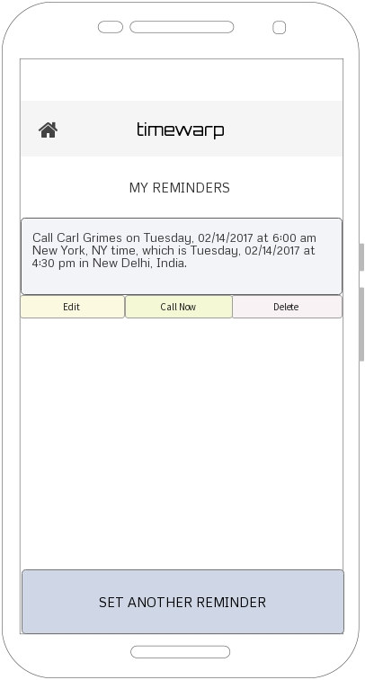
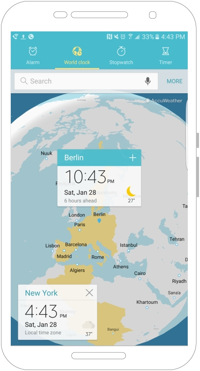

Introducing TimeWarp, the totally revolutionary app that calculates time difference and tells local time in different time zones.
Yes, you could Google it. But Google already has enough googling to do. TimeWarp it instead!

TimeWarp is here to solve the problem of when is a good time to call when you're separated by several time zones. Plus, to help you always get to your meeting on time, regardless of where you travel.

To check the time difference, simply put in the location of the other person. TimeWarp will geolocate you automatically when you're online, but works just as well (if with one extra step) offline.

And presto! You have the time and day on the other side, plus some helpful advice.

You can set reminders to call your contacts dependent on any future locations you will travel to, and find the best time to call for all conversation partners.

All reminders in TimeWarp are saved and editable in the My Reminders section.

In future iterations, you will be able to locate all your contacts on the rotating, zoomable globe and set reminders from there. Still further down the road, you will be able to see local time right next to your contacts and schedule contacts from your Contacts list.